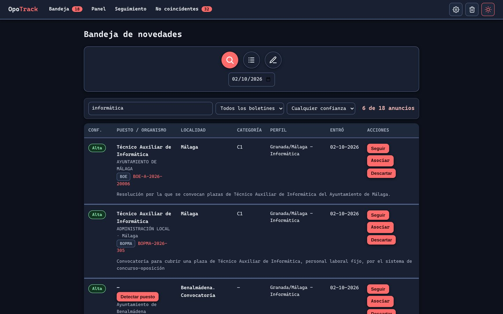
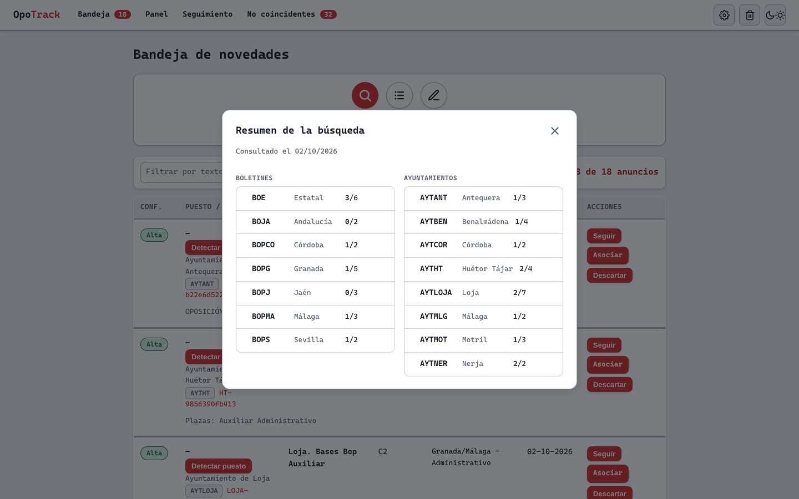
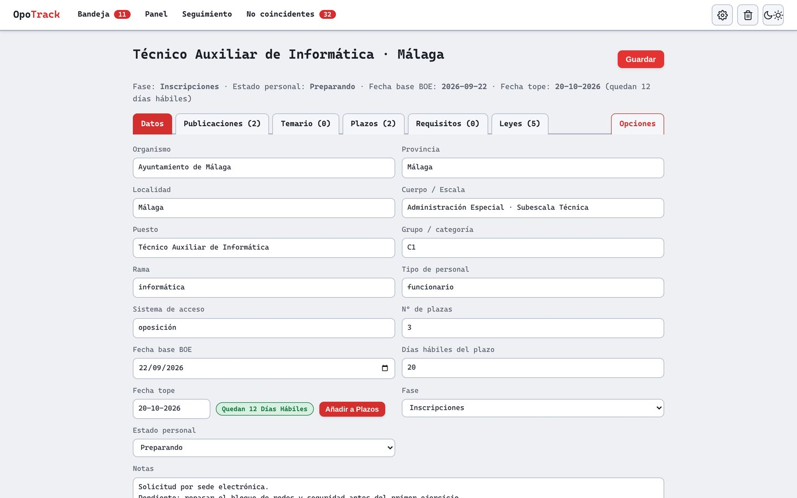

OpoTrack
En desarrolloAplicación web local para buscar y seguir convocatorias de oposiciones. Cada día recorre los boletines oficiales y las webs de varios ayuntamientos, filtra los anuncios con mis perfiles de búsqueda y deja lo que encaja en una bandeja.
El problema
Las convocatorias de empleo público se publican repartidas: unas en el BOE, otras en el boletín autonómico, otras en el de la provincia y otras solo en la web del ayuntamiento. Para no perderse ninguna hay que revisar cada día más de una docena de sitios.
OpoTrack hace esa revisión por mí. Consulta 15 fuentes, se queda con los anuncios que encajan con lo que busco y me avisa.
Qué hace

- • Búsqueda en varias fuentes: por fecha, eligiendo qué boletines y ayuntamientos entran, con un resumen de lo leído en cada uno.
- • Bandeja de novedades: cada anuncio muestra la localidad, el puesto, el grupo y un nivel de confianza, extraídos del texto. Se puede seguir, asociar a una convocatoria que ya se sigue o descartar.
- • No coincidentes: lo que el filtro deja fuera no se pierde; se acumula para repasarlo, por si el filtro se ha dejado algo.
- • Seguimiento: cada convocatoria tiene su ficha, con publicaciones, temario, plazos, requisitos, leyes y documentos adjuntos.
- • Avisos por Telegram: un resumen diario, opcional, con las novedades.
- • Además: papelera reversible, panel con contadores y plazos próximos, y tema claro y oscuro.
Las fuentes
Cada fuente publica de una forma distinta, así que cada una tiene su propio conector. Todos devuelven los anuncios en el mismo formato, y el resto de la aplicación no sabe de dónde viene cada uno.
| Fuente | Cómo se lee |
|---|---|
| Boletín Oficial del Estado | API de datos abiertos |
| Boletín Oficial de la Junta de Andalucía | Feed Atom de la sección de oposiciones |
| BOP de Granada, Sevilla, Córdoba y Jaén | HTML del boletín del día |
| BOP de Málaga | Sumario diario, con respaldo en datos abiertos o en un CSV local |
| Ayuntamientos de Antequera, Benalmádena, Córdoba, Huétor Tájar, Loja, Málaga, Motril y Nerja | HTML de su página de empleo público |

Añadir una fuente es escribir un conector nuevo, guardar una muestra de su página y añadir una prueba que la lea.
Cómo decide qué entra en la bandeja
Los perfiles de búsqueda se editan desde la propia web, sin tocar código. Un anuncio entra en la bandeja si cumple las tres condiciones de algún perfil:
- • Tema: contiene alguno de los términos temáticos del perfil, por ejemplo los de informática.
- • Ámbito: si el perfil exige una zona, aparece alguno de sus términos geográficos.
- • Exclusiones: no contiene ninguno de los términos excluidos.
Las comparaciones se hacen sin distinguir mayúsculas ni acentos. El filtro prefiere pasarse a quedarse corto: ante la duda, el anuncio entra y lo descarto yo. Lo descartado se recuerda, y lo ya visto no vuelve a aparecer.
El seguimiento
Cuando decido seguir una convocatoria, pasa a tener su propia ficha. Ahí se van asociando las publicaciones posteriores, y la aplicación calcula la fecha tope y los días hábiles que quedan.

El código
Unas 5.400 líneas de Python. Está pensada para un solo usuario, en su propio equipo, sin servicios externos obligatorios.
- • fuentes/: un conector por boletín o ayuntamiento, todos con la misma interfaz.
- • motor.py: búsqueda, filtrado por perfiles y deduplicación.
- • extraccion.py: saca del texto el puesto, la localidad, el grupo y el número de plazas.
- • models.py y db.py: modelo de datos con SQLAlchemy. El esquema se amplía solo al arrancar.
- • web/: rutas de Flask, plantillas y estilos.
- • notificaciones.py: mensajes y envío por Telegram.
- • cli.py: la misma búsqueda desde la línea de comandos, que es lo que ejecuta la tarea programada del aviso diario.
Pruebas
Casi un centenar de pruebas con pytest. No usan la red ni la base de datos real: cada conector se prueba contra una muestra guardada de su fuente, y el resto, contra una base de datos temporal.
Las muestras son páginas reales de cada boletín y de cada ayuntamiento, guardadas en el repositorio.
Cómo ejecutarlo
Hace falta Python 3.10 o superior.
git clone https://github.com/xerchion/OpoTrack.git
cd OpoTrack
pip install -r requirements.txt
python cli.py seed # crea la base de datos y carga fuentes y perfiles
python run_web.py # http://127.0.0.1:5000En Windows basta con hacer doble clic en OpoTrack.bat.
Límites
- • Es una aplicación local y no tiene inicio de sesión: el servidor solo escucha en el propio equipo y no está pensada para exponerse a internet.
- • Varias fuentes se leen del HTML público de cada sitio. Si una web cambia su estructura, su conector deja de funcionar hasta que se adapta.
- • No es un servicio oficial ni sustituye a la consulta de los boletines: los plazos y las bases hay que comprobarlos siempre en la fuente original.